Narrative Intelligence
A dark analyst workspace that turns a flood of videos into a few narratives worth investigating, and a few decisions worth making.
An analyst tool for spotting and judging emerging narratives. I designed the map, the drill-down flow, the evidence model and the AI blueprint behind it.
From a flood of videos to a few decisions.
Design a dark, defense-grade analyst workspace that turns thousands of short videos into a small set of narratives worth investigating. Three flows, a clear information hierarchy, and a blueprint for where AI helps and where the analyst stays in charge.
All data in the designs is synthetic demo data.
Start from the map, not from a list.
The analyst opens on a narrative map. Each circle is a narrative: size shows volume, colour shows momentum, and position groups related stories together. One glance answers the first question of the day: which narratives should I look at first?
A side panel summarises the selected narrative, its growth against the previous 7 days, and the top videos behind it, so the next click is always an informed one.
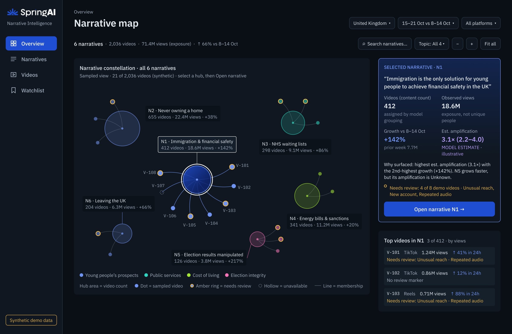
One view, four encodings, zero legend hunting.
The circles do the heavy lifting, so they had to read instantly. Size encodes volume, ring and colour encode growth and status, and links show which narratives feed each other. Labels sit on the nodes that matter and fade for the rest, keeping the sampled view calm even when the field is dense.
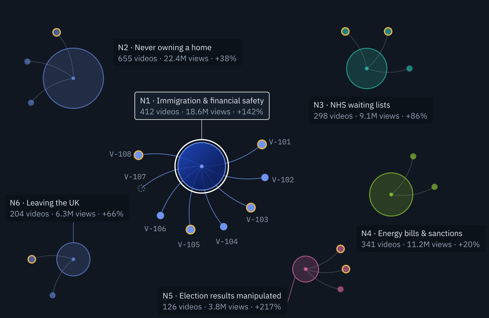
Ecosystem, then a single video, then a decision.
Opening a narrative shows what drives it: a propagation timeline with publish dots and a sortable grid of supporting videos. Opening a video separates what is observed from hypotheses, model estimates and what is still unknown, ending in one of three actions: Flag, Monitor or Dismiss, with a note.
When data is incomplete, the screen says so, instead of hiding it behind a confident number.
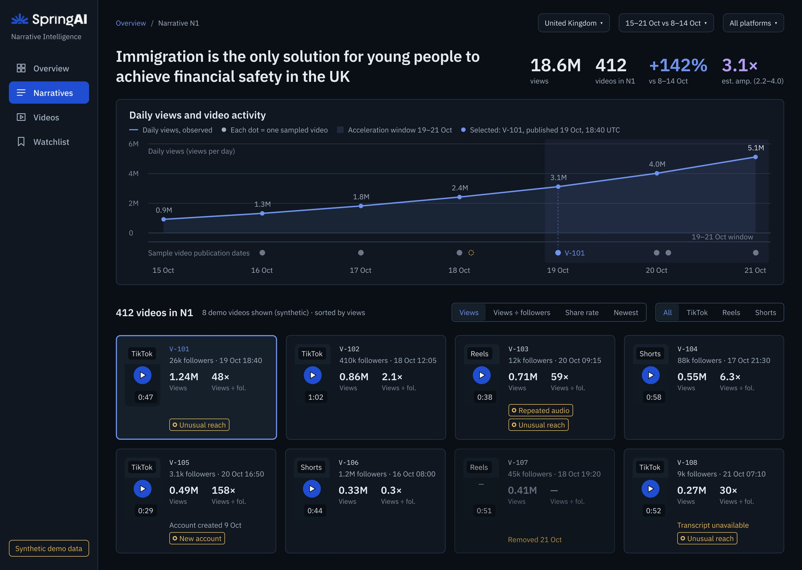
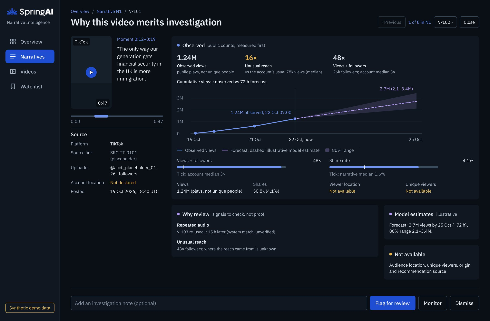
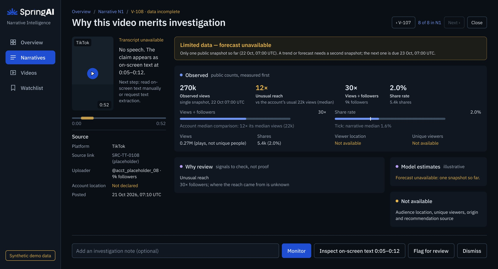
Flow and information hierarchy.
Before any pixels, I mapped each screen to the question the analyst is asking and the decision it should unlock. Every one of the four charts earns its place by driving a decision, and context carries forward at every level so nothing is lost on the way back.
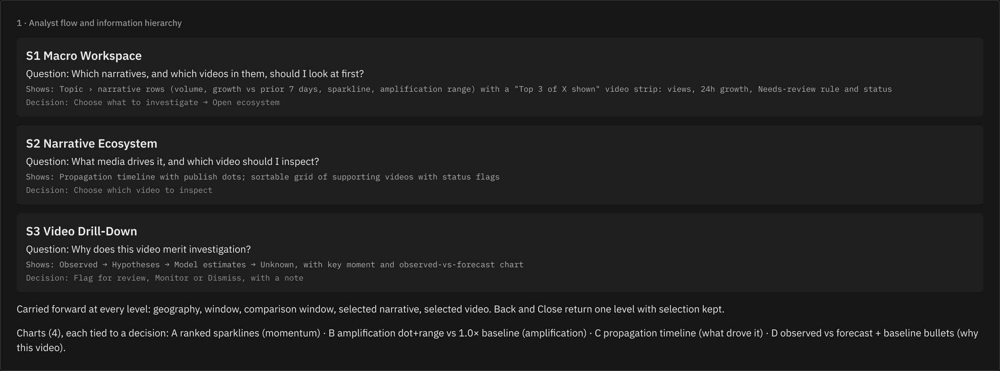
Three directions, one winner.
I explored topic lanes, a brush-filtered feed and a video inspector before settling on the macro workspace. Each option was compared on decision speed, scan cost and how well it scales when volume grows.
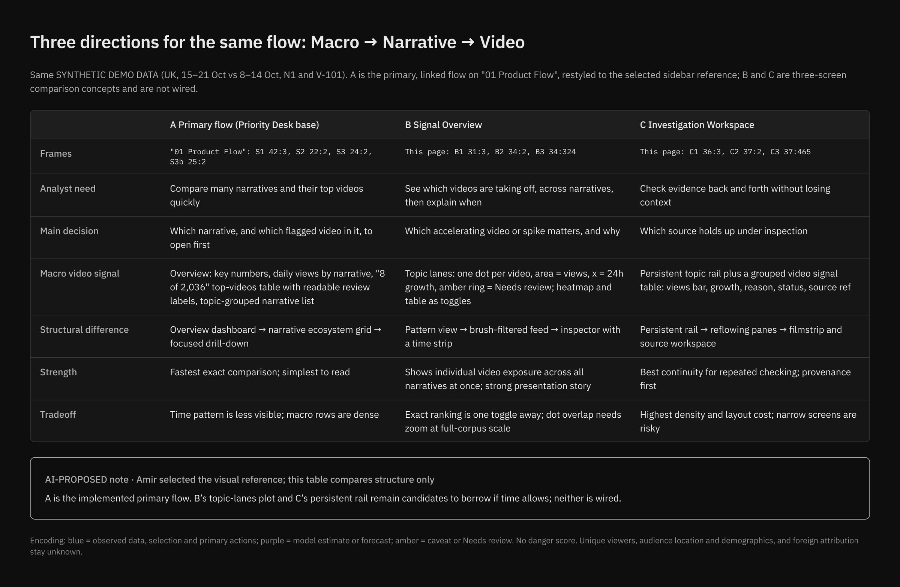
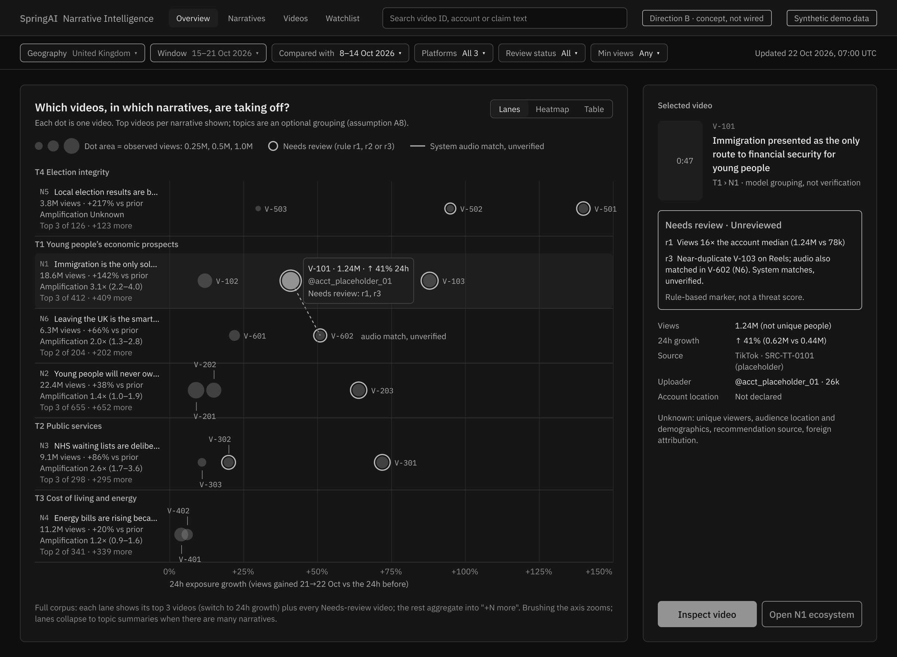
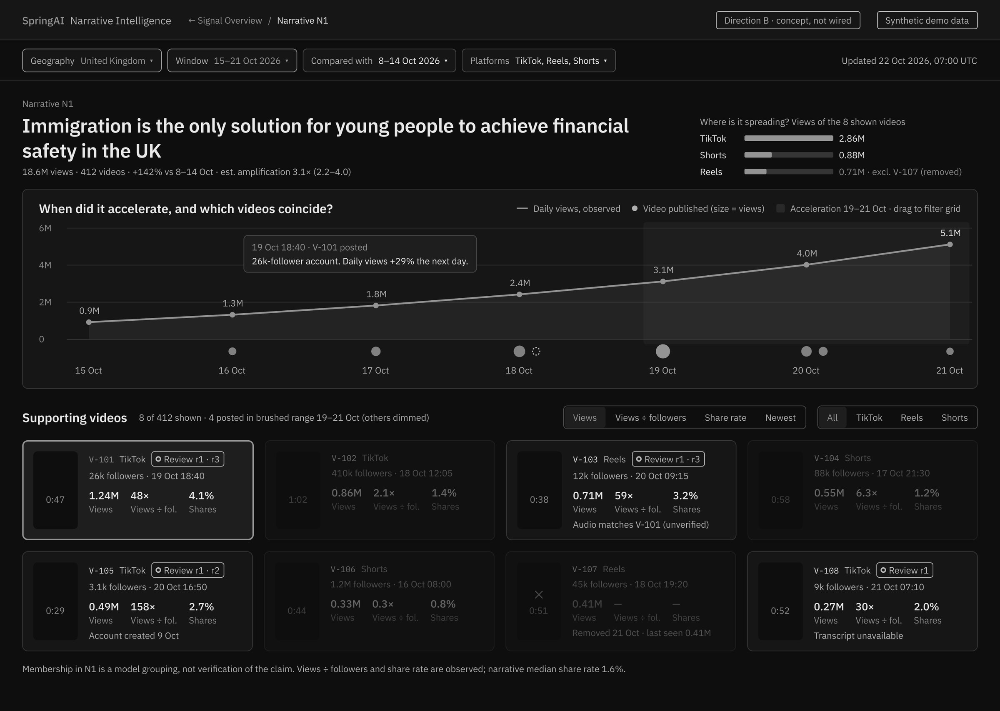
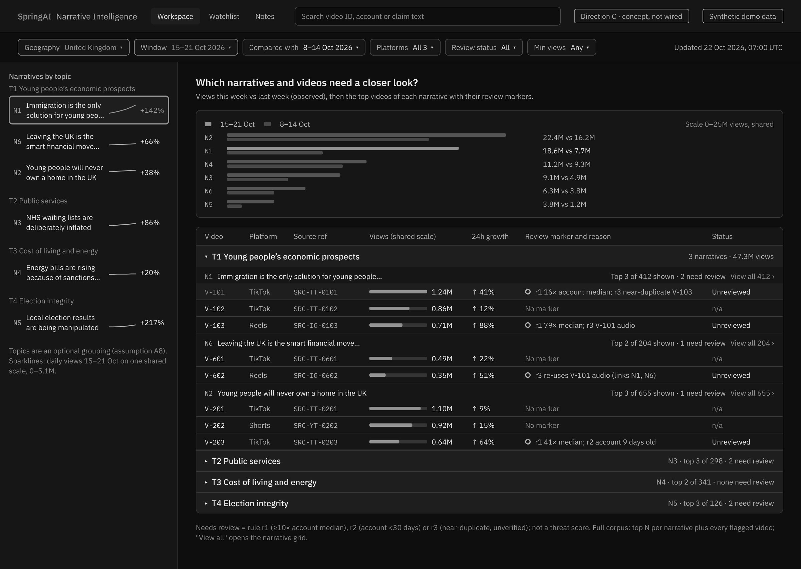
Where AI helps, and where it stops.
AI proposes, the analyst decides. The blueprint lists assumptions, the pipeline that produces the designs and the checks that keep model estimates visibly separate from observed facts.
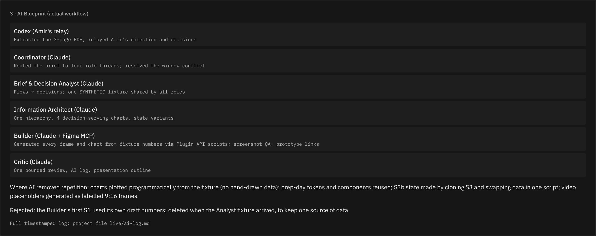